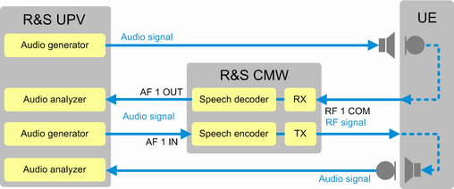

To measure the speech quality of a VoLTE connection, add an audio analyzer to your test setup. The following example uses an R&S UPV.
The test setup in the following figure is similar to the combination of the microphone test setup and the speaker test setup. But the audio generators and measurements are now located in the R&S UPV, not in the R&S CMW. The RF connection / VoLTE connection is the same as for the preceding tests.

A generator of the R&S UPV feeds an audio signal to the microphone of the UE. The UE encodes the audio signal and modulates the RF uplink signal. It transmits the RF signal via the VoLTE connection to the R&S CMW. The R&S CMW demodulates and decodes the signal. It routes the resulting audio signal via the AF 1 OUT port to an audio analyzer of the R&S UPV.
A generator of the R&S UPV feeds an audio signal via the AF 1 IN port to the speech encoder of the audio board. The test signal is transmitted via the VoLTE connection to the UE. The UE demodulates and decodes the signal and feeds the resulting audio signal to its speaker. An analyzer of the R&S UPV measures the audio signal of the speaker.
If the UE has microphone and speaker jacks or a headset jack, connect the UE via an audio cable to the R&S UPV. Alternatively, you can position a microphone at the UE speaker and a speaker at the UE microphone and connect them to the R&S UPV. Use a high-quality microphone and speaker designed for that purpose, for example an artificial head.
The following sequence describes the configuration steps required at the R&S CMW. The R&S UPV configuration is out of the scope of this document.
Set up the VoLTE connection as described in the previous sections.
Set up the two audio connections between the R&S UPV and the UE and the two audio connections between the R&S UPV and the R&S CMW.
Configure the audio settings of the R&S CMW:
At the top of the "Audio Measurement 1" view, select the scenario "External Analog Speech Analysis".
Press the "Config" hotkey to open the audio configuration dialog box.
Configure the input level compatible to the R&S UPV generator output.
Configure the output level compatible to the R&S UPV analyzer input.
Check whether a calibration procedure of the R&S UPV requires specific level settings.
Configure the R&S UPV. Calibrate it, if necessary.
Start the R&S UPV generators and analyzers.
- Application note "1MA204", "Voice over LTE (VoLTE) Speech Quality Measurements"
- Application note "1GA62", "Test Automation Tool for POLQA® and PESQ® Speech Quality Tests"
These documents are available for download at http://www.rohde-schwarz.com.
The R&S CMWrun provides test modules for automated speech quality tests with the R&S CMW and the R&S UPV.